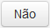

Cadastrar Documento externo
Após preencher a aba Assunto e clicar no botão Próxima, o sistema apresenta a aba Interessados:

Cadastrar Documento - Aba Interessados
Clique no ícone para Adicionar um Interessado:
Clicando no ícone para adicionar um interessado
A tela Adicionar Interessado será apresentada:
Adicionar Interessado
Selecione a opção Interno no campo Interessado. Observe que alguns campos são obrigatórios (Veja Nota 1):
Selecionando a opção Interno campo Interessado
Informações para cadastro de documento - Aba Interessados:
Interessado: |
Interessado do documento. |
Tipo de Pessoa: |
Tipo do interessado. |
Unidade do ICMBio: |
Nome das unidades internas ou setores do ICMBio. |
Funcionário do ICMBio: |
Nome dos funcionários do ICMBio. |
 Preenchendo a aba Interessados do cadastro de documento!!
Preenchendo a aba Interessados do cadastro de documento!!

Selecionando um valor no campo Tipo de Pessoa

Selecionando um valor no campo Unidade do ICMBio

Selecionando um valor no campo Funcionário do ICMBio
 , se desistir de adicionar o interessado, ou clique botão
, se desistir de adicionar o interessado, ou clique botão  para finalizar o cadastro do interessado:
para finalizar o cadastro do interessado:
Cadastro de Interessado Interno - Tipo de Pessoa Funcionário todo preenchido
Mensagem de sucesso
Selecione a opção Externo no campo Interessado. Observe que alguns campos são obrigatórios (Veja Nota 2):

Selecionando a opção Externo campo Interessado
Informações para cadastro de documento - Aba Interessados:
Interessado: |
Interessado do documento. |
Tipo de Pessoa: |
Tipo do interessado. |
Nacionalidade Brasileira: |
Nacionalidade do interessado do documento: brasileiro ou estrangeiro. |
Nome: |
Nome da pessoa física ou Organização externa interessada no documento (dependendo do tipo de pessoa selecionado). |
CPF: |
CPF da pessoa física interessada no documento. |
Nº do Passaporte: |
Número do passaporte da pessoa física estrangeira interessada no documento. |
Razão Social: |
Nome da pessoa jurídica interessada no documento. |
CNPJ: |
CNPJ da pessoa jurídica interessada no documento. |
 Preenchendo a aba Interessados do cadastro de documento!!
Preenchendo a aba Interessados do cadastro de documento!!
Selecionando uma opção no campo Tipo de Pessoa
Ao selecionar o Tipo de Pessoa Física o sistema apresenta os campos Nacionalidade Brasileira, Nome e CPF
Selecionando a opção Sim da Nacionalidade Brasileira

Selecionando um nome na lista Nome
Observação: Caso o nome procurado não seja apresentado na lista de opções do campo, siga as instruções conforme Nota 4
Cadastro de Interessado Externo - Pessoa Física toda preenchido
Observação: Caso o CPF informado não seja de uma pessoa cadastrada, siga as instruções conforme Nota 4
, se desistir de adicionar o interessado, ou clique no botão para finalizar o cadastro do interessado.Mensagem de sucesso

Cadastro de Interessado Externo - Pessoa Jurídica

Selecionando um item na lista do campo Razão Social
Observação: Caso o nome procurado não seja apresentado na lista de opções do campo, siga as instruções conforme Nota 6

Cadastro de Interessado Externo - Pessoa Jurídica toda preenchido
Observação: Caso o CNPJ informado não seja de uma pessoa cadastrada, siga as instruções conforme Nota 6
, se desistir de adicionar o interessado, ou clique no botão para finalizar o cadastro do interessado.Mensagem de sucesso

Cadastro de Interessado Externo - Unidade Organizacional Externa
Selecionando um item na lista Nome
, se desistir de adicionar o interessado, ou clique no botão para finalizar o cadastro do interessado:Cadastro de Interessado Externo - Unidade Organizacional Externa todo preenchido
Mensagem de sucesso
Os interessados cadastrados são apresentados na Lista de Interessados:

Cadastro de Documento - Aba Interessados - Lista de Interessados
Se desejar excluir algum interessado, clique no ícone :

Clicando no ícone para excluir o interessado
Uma mensagem de confirmação é apresentada:

Mensagem de confirmação
Se não desejar excluir o interessado, clique no botão . Caso contrário, clique no botão  .
.
Ao confirmar a exclusão o sistema retira o interessado da Lista de Interessados.
IMPORTANTE!!
 Nota 1:
Nota 1:
Os campos obrigatórios são indicados pelo sinal de asterisco (*) na cor verde ao lado do nome. Quando algum ou nenhum campo obrigatório for preenchido, o sistema apresenta uma mensagem de erro: "Campos de preenchimento obrigatório não foram preenchidos.".
Comportamento da tela Adicionar Interessado - Interno, após clicar no botão Concluir sem preencher os campos obrigatórios.
 Nota 2:
Nota 2:
Os campos obrigatórios são indicados pelo sinal de asterisco (*) na cor verde ao lado do nome. Quando algum ou nenhum campo obrigatório for preenchido, o sistema apresenta uma mensagem de erro: "Campos de preenchimento obrigatório não foram preenchidos.".
Comportamento da tela Adicionar Interessado - Externo, após clicar no botão Concluir sem preencher os campos obrigatórios.
 Nota 3:
Nota 3:
A única diferença que existe no preenchimento do cadastro quando se tratar de Brasileiro ou Estrangeiro é que na primeira opção, ou seja, ao selecionar Nacionalidade Brasileira como Sim, o sistema apresenta o campo CPF. No entanto, tratando-se da segunda opção, ou seja, ao selecionar Nacionalidade Brasileira como Não, o sistema apresenta o campo Passaporte em vez do campo CPF (veja as imagens abaixo):

Selecionando a opção Sim no campo Nacionalidade Brasileira: o campo CPF é apresentado logo abaixo do campo Nome

Selecionando a opção Não no campo Nacionalidade Brasileira: o campo Nº do Passaporte é apresentado logo abaixo do campo Nome
 Nota 4:
Nota 4:
Para cadastrar uma pessoa física, clique no ícone . Logo após, clique na opção Cadastrar, que será apresentada:
Selecionando opção para cadastrar pessoa física
O sistema exibe uma outra aba no seu navegador com a tela Cadastrar Pessoa Física, por meio da qual devem ser informados os dados solicitados:

Tela Cadastrar Pessoa Física
Finalize o cadastro clicando no botão  . Será apresentada a seguinte mensagem:
. Será apresentada a seguinte mensagem:

Mensagem de sucesso
 Nota 5:
Nota 5:
A mesma situação acontece para estrangeiro, ou seja:
 Nota 6:
Nota 6:
Para cadastrar uma pessoa jurídica, clique no ícone . Logo após, clique na opção Cadastrar, que será apresentada:
Selecionando opção para cadastrar pessoa jurídica
O sistema exibe uma outra aba no seu navegador com a tela Cadastrar Pessoa Jurídica, por meio da qual devem ser informados os dados solicitados:

Tela Cadastrar Pessoa Jurídica
Finalize o cadastro clicando no botão . Será apresentada a seguinte mensagem:
Mensagem de sucesso
Created with the Personal Edition of HelpNDoc: Full-featured multi-format Help generator